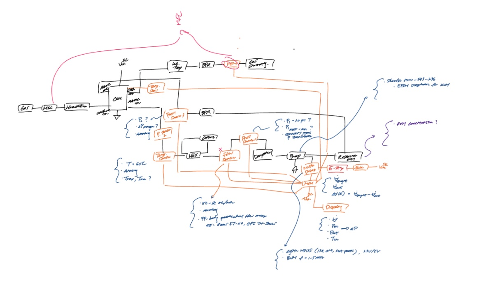
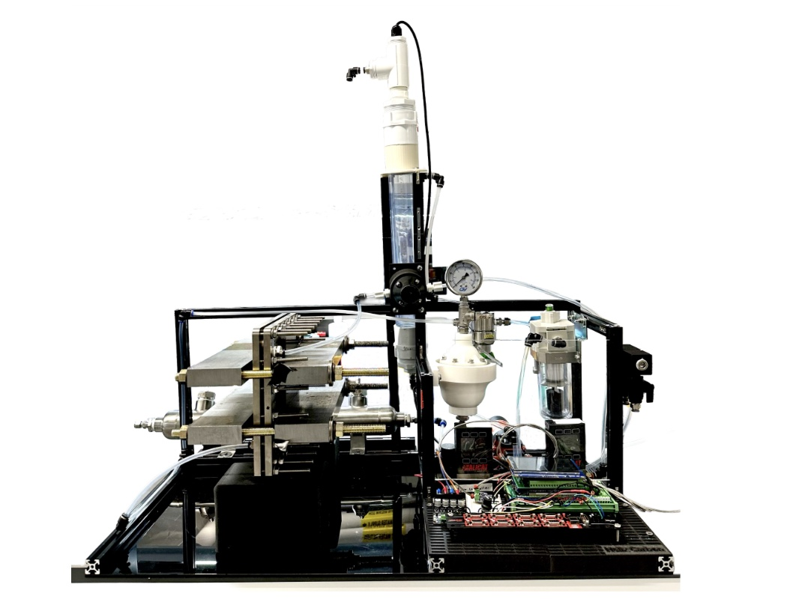

1 kW Electrochemical Test Rack
Helix Carbon (The Engine, MIT) · Summer 2026. I designed and built a 1 kW electrochemical test rack, from a hand-drawn P&ID to a working system.

Overview
The 1 kW rack is a benchtop test system for Helix Carbon’s electrolyzer cells. It circulates electrolyte through the stack under controlled flow, pressure and temperature while the cell is running, so the team can test reactor hardware at a meaningful scale without tying up the 10 kW system.
I owned it end to end: the process design, component selection, framing, sensor integration and the controls that run it.

From P&ID to Hardware
The system started as a hand-drawn piping and instrumentation diagram. It shows the gas feed through a mass-flow controller and humidifier into the cell, and a liquid loop from the electrolyte reservoir through the pump, pulsation dampener, flow sensor, heat exchanger and pressure/temperature sensors, with back-pressure regulators setting the operating pressure. The orange lines are the sensor and control wiring back to the controller, motor driver, E-stop and display.
- Characterized pump flow rate against motor-controller PWM to calibrate the liquid loop
- Selected an electrolyte-compatible pulsation dampener and back-pressure regulator (BPR)
- Integrated pressure, temperature and flow sensors with the control electronics

The Finished Rack
I built the rack on an 80/20 frame, with custom 3D-printed mounts holding the sensors, fittings and electronics in place. The stack sits on the left, the gas/liquid separation column rises through the middle, and the pressure regulation, dampener, filtration and Alicat flow controllers sit next to the control board on the right. That keeps the fluid path short and every gauge and connection easy to reach.